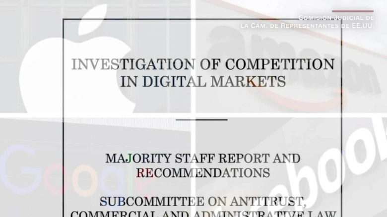

Huracan delta se debilita
(CNN) –– El huracán Delta se debilitó en tras su paso por la Península de Yucatán: ahora es un huracán categoría 1 con
vientos sostenidos de 136 kilómetros por hora, según el Centro Nacional de Huracanes (NHC, por sus siglas en inglés). El
centro del huracán se encuentra ahora sobre el sur del Golfo de México y se espera que se fortalezca durante las
próximas 36 horas.
El pronóstico oficial del NHC indica que Delta recuperará la fuerza de un huracán importante con vientos de 185 km/h en
la noche de este jueves. Aún se espera que la tormenta golpee Louisiana en la tarde del viernes.
En la mañana de este miércoles, Delta tocó tierra en México. Aproximadamente a medio camino entre las ciudades
turísticas de Cancún y Playa del Carmen en la localidad de Puerto Morelos, de acuerdo al NHC. En ese momento, tenía
vientos de 175 kilómetros por hora, lo que lo convirtieron en un fuerte huracán de categoría 2.
La gente de toda la península se preparó para la tormenta del martes. Adquirieron suministros en las tiendas de
comestibles, cubriendo edificios con madera contrachapada y haciendo fila para llenar grandes jarras de agua, mostró un
video de TV Azteca, afiliada de CNN.
Decenas de turistas que fueron evacuados de sus hoteles fueron vistos con máscaras, sentados, acostados y charlando
mientras esperaban el transporte, según las imágenes.
La rápida intensificación del huracán Delta antes de llegar a México y EE.UU.
Delta pasó de ser una depresión tropical a un huracán categoría 4 en aproximadamente 30 horas de lunes a martes.
En un momento, los vientos de Delta aumentaron en 136 km/h en 24 horas. Es el mayor incremento en la velocidad del
viento de un ciclón en octubre desde el huracán Wilma en 2005. Este fue el último gran huracán que azotó Cancún.
Aunque Yucatán sobresale como un pulgar al sur del Golfo de México, solo seis huracanes han pasado a 80 kilómetros de
Cancún en los últimos 100 años.
«Solo dos de ellos han sido grandes huracanes: Gilbert en 1988 (categoría 5 con vientos de 257 km/h) y Wilma en 2005
(categoría 4 con vientos de 210 km/h)», dijo el meteorólogo de CNN Brandon Miller.
Gilbert y Wilma fueron ciclones legendarios y «en realidad son las dos tormentas más intensas registradas por la presión
más baja en la historia del Atlántico», dijo Miller.
Ambos fenómenos devastaron la industria turística de Cancún, que tardó años en reconstruirse.
Lo que debes saber sobre la acusación a Apple, Amazon, Facebook y Google
Una comisión judicial de la Cámara de Representantes de Estados Unidos asegura que las cuatro grandes tecnológicas, Google, Apple, Facebook y Amazon, han participado en tácticas de monopolio y han usado su dominio en el mercado para abusar de su poder. Las compañías rechazaron las acusaciones. Miguel Ángel Antoñanzas nos lo explica.
"DILE NO a los Fake News"